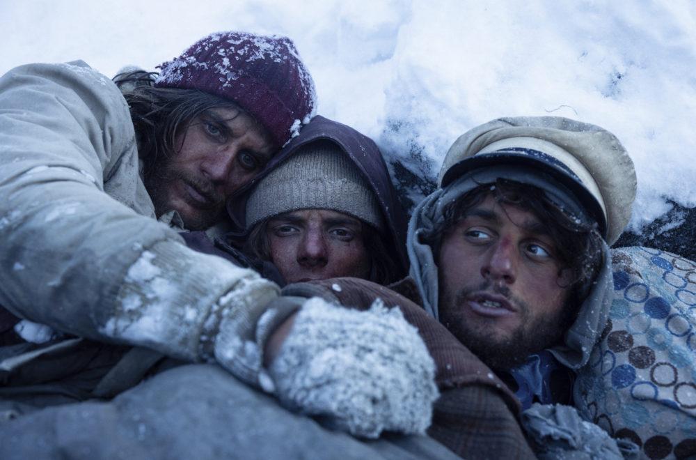

La sociedad de la nieve es una película dramática española de 2023, dirigida y escrita por J. A. Bayona, basada en el libro homónimo de Pablo Vierci, que a su vez se basa en el documental homónimo de Gonzalo Arijón que relata el accidente del vuelo 571 de la Fuerza Aérea Uruguaya en la cordillera de los Andes en 1972.23 La película está protagonizada por Enzo Vogrincic en el papel de Numa Turcatti, uno de los pasajeros del vuelo. 4 La película se estrenó en las salas de cine de Uruguay el 13 de diciembre de 2023, y en las de España dos días más tarde.56 Asimismo, se estrenó mundialmente el 4 de enero de 2024 en la plataforma Netflix.7 Fue elegida por la Academia de las Artes y las Ciencias Cinematográficas para representar a España en los Premios Óscar 2024 en la categoría de Mejor Película Internacional.8 Se trata, además, de la tercera película más galardonada en la historia de los Premios Goya, por detrás de Mar adentro y ¡Ay, Carmela!. Se proyectó el 9 de septiembre de 2023 en la clausura del 80.º Festival Internacional de Cine de Venecia.9 El 1 de septiembre de 2023, J.A. Bayona presentó la película a los supervivientes, a sus familias y a las familias de los pasajeros fallecidos del avión Fairchild FH-227D.

El reparto está compuesto por actores uruguayos y argentinos:1011 Enzo Vogrincic como Numa Turcatti. Estudiante de derecho de 24 años, viajó a Chile por invitación de su mejor amigo, Pancho Delgado. No jugaba al rugby, sino al fútbol, y apenas conocía al resto de los pasajeros. Salió ileso del choque e inmediatamente se entregó al servicio del grupo. Participó de varias expediciones. Agustín Pardella como Nando Parrado. Estudiante y jugador de rugby de 22 años. Viajó junto a su madre, su hermana y sus amigos íntimos, Panchito Abal y Guido Magri. Tras el accidente, quedó inconsciente por tres días a causa de una fuerte conmoción cerebral. Andy Pruss como Roy Harley. Estudiante de ingeniería de 20 años y jugador de rugby. Tras el accidente, reparó la radio que sirvió para escuchar las noticias. Matías Recalt como Roberto Canessa. Estudiante de medicina y jugador de rugby de 19 años. Ocurrido el accidente, asumió el papel de médico y prestó cuidados a los heridos. Tomás Wolf como Gustavo Zerbino. Estudiante de medicina y jugador de rugby de 19 años. Participó en las primeras excursiones. Además, se encargó de atender a los heridos y de preservar la memoria de los que murieron en la montaña, recopilando sus objetos personales con el fin de entregarlos a sus familiares. Diego Vegezzi como Marcelo Pérez del Castillo. Estudiante de arquitectura de 25 años y capitán del equipo de rugby del Old Christians Club. Tras el accidente, asumió el liderazgo del grupo. Racionaba los víveres y organizaba los grupos de trabajo. Fernando Contigiani como Arturo Nogueira. Estudiante de economía y jugador de rugby de 21 años. En el impacto se fracturó sus piernas y quedó gravemente herido. Esteban Kukuriczka como Fito Strauch Urioste. Estudiante de ingeniería agronómica de 24 años. Inventó la máquina para derretir hielo y las gafas de sol. Viajó con sus primos Eduardo Strauch Urioste, Daniel Fernández Strauch y Daniel Shaw Urioste. Los tres primos Strauch asumieron un papel de liderazgo fundamental para la organización del grupo. Valentino Alonso como Alfredo Pancho Delgado. Estudiante de derecho de 24 años. Fue invitado al viaje por Gastón Costemalle y convenció a su mejor amigo Numa Turcatti de acompañarlo. A causa del accidente, tuvo heridas de gravedad en una pierna. Francisco Romero como Daniel Fernández Strauch. Estudiante de ingeniería agronómica de 26 años. Esteban Bigliardi como Javier Methol. 36 años. Fue invitado por su primo Panchito Abal. Viajó con su esposa Liliana Navarro, con quien tenía cuatro hijos. Agustín Della Corte como Antonio Tintín Vizintín. Estudiante de derecho y jugador de rugby de 19 años. A consecuencia del accidente, se fracturó dos costillas. Louta como Gastón Costemalle. Estudiante de derecho y jugador de rugby de 23 años. Había perdido recientemente a su padre y a su hermano. Invitó a Chile a su íntimo amigo Coche Inciarte y a su compañero de facultad Pancho Delgado. Blas Polidori como Gustavo Coco Nicolich. Estudiante de veterinaria y jugador de rugby de 20 años. Voló con su grupo de amigos: Roy Harley, Carlitos Páez, Diego Storm y Bobby François. Varado en la montaña, escribió cartas a su familia relatando el accidente y los días de supervivencia. Benjamín Segura como Rafael Vasco Echavarren. Estudiante de lechería de 22 años. A causa del accidente, su pierna quedó gravemente herida. Santiago Vaca Narvaja como Daniel Maspons. Estudiante y jugador de rugby de 20 años. Íntimo amigo de Roberto Canessa. Salió ileso del accidente y formó parte de los expedicionarios. Rafael Federman como Eduardo Strauch Urioste. Estudiante de arquitectura de 25 años. Viajó a Chile con sus primos y su mejor amigo Marcelo Pérez del Castillo. Emanuel Parga como el sargento Carlos Roque. Mecánico del avión de 24 años. El único miembro de la tripulación que sobrevivió al choque, pero falleció en la avalancha. Felipe González Otaño como Carlitos Páez. Estudiante de 18 años y jugador de rugby. Simón Hempe como José Luis Coche Inciarte. Estudiante de ingeniería agronómica de 24 años. Fue invitado por su mejor amigo Gastón Costemalle. Rocco Posca como Ramón Moncho Sabella. Estudiante de agronomía de 21 años. Jerónimo Bosia como Panchito Abal. Jugador de rugby de 21 años. Acaecido el accidente, quedó gravemente herido con una hemorragia cerebral. Juan Caruso como Álvaro Mangino. Estudiante de 19 años. Se fracturó una pierna en el accidente. Paula Baldini como Liliana Navarro. 34 años. Viajó con su esposo Javier Methol, con quien tenía cuatro hijos. Salió ilesa del impacto y ofreció consuelo a los muchachos más jóvenes. Fue una de las víctimas del alud. Maximiliano de la Cruz como el teniente coronel Dante Lagurara. Copiloto de 41 años. Quedó malherido tras el impacto y comunicó a los sobrevivientes que el avión había pasado Curicó. Felipe Ramusio como Diego Storm. Estudiante de medicina de 20 años. Sobrevivió al siniestro y, horas después, vio que Nando Parrado estaba vivo y sugirió moverlo a un lugar menos frío, salvando su vida. Alfonsina Carrocio como Susana Parrado. 20 años. Viajó con su madre y su hermano Nando. Estuvo gravemente herida tras el accidente y murió horas antes de la declaración del fin de la búsqueda del avión. Federico Aznárez como Enrique Platero. Estudiante de agronomía y jugador de rugby de 22 años. Luego del siniestro, permaneció herido por un tubo de acero que se había clavado en su estómago. Juan Diego Eirea como Juan Carlos Menéndez. Estudiante de derecho de 22 años. Salió ileso del accidente. Agustín Berrutti como Roberto Bobby François. Estudiante de agronomía de 20 años. Salió ileso del choque. Luciano Chatton como Pedro Algorta. Estudiante de economía de 21 años, invitado por su amigo Arturo Nogueira. Salió ileso del accidente. Julián Bedino como Guido Magri. Estudiante de agronomía y jugador de rugby de 23 años. Toto Rovito como Alexis Hounié. Estudiante de veterinaria y jugador de rugby de 20 años. Francisco Bereny como Felipe Maquirriaín. Estudiante de economía de 22 años, invitado por su amigo Arturo Nogueira. Virginia Kaufmann como Esther Horta de Nicola. 40 años. Viajaba con su marido, el dr. Nicola. Tenían cuatro hijos en común. Lautaro Bakir como Julio Martínez Lamas. Jugador de rugby y empleado bancario de 24 años. Lucas Mascareña como Fernando Vázquez. Estudiante de medicina de 20 años, invitado por su amigo Roberto Canessa. Tea Alberti como Graciela Augusto de Mariani. 43 años. Viajaba a Chile para asistir a la boda de su hija. Federico Formento como Daniel Shaw Urioste. Jugador de rugby de 24 años. Viajó con sus primos Adolfo y Eduardo Strauch Urioste. Giselle Pereyra como Eugenia Dolgay. 50 años. Madre de Nando y Susana Parrado. Murió en el choque. Carlitos Páez como su padre, Carlos Páez Vilaró, artista uruguayo que llevó a cabo su propia búsqueda del avión desaparecido. Ezequiel Fadel Hinojosa como Sergio Catalán, arriero chileno, la primera persona con quien contactaron Roberto Canessa y Fernando Parrado, el 21 de diciembre.
La Sociedad de la Nieve" narra la desgarradora historia del accidente aéreo en los Andes, donde los supervivientes, principalmente jugadores del equipo de rugby del Old Christians Club de Montevideo, se ven forzados a depender unos de otros para sobrevivir en el remoto corazón de la cordillera.
GUY LODGE
Es una potente y efectiva película lacrimógena que te atrapa con oleadas alternas de pavor, horror y alivio, a pesar de que la historia no resulte novedosa (...) Bayona logra, de nuevo, una reconstrucción visceral y estremecedora de una catástrofe real"
WENDY IDE SCREENDAILY
"La adaptación de J.A. Bayona de esta historia tan conocida se ve realzada por potentes y vigorosas secuencias de acción. Se las arregla para mantener cierto grado de tensión a pesar de su excesiva duración"